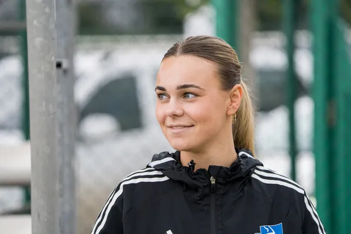
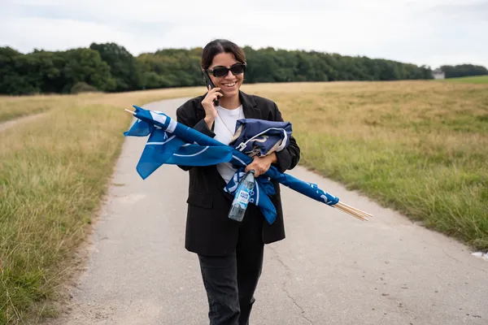
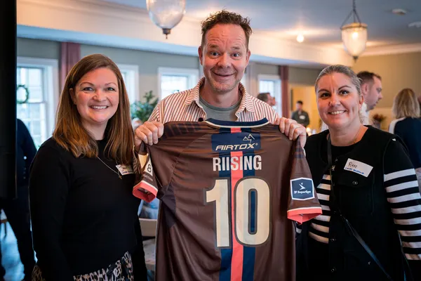

Mød udvalgte af Lyngby Boldklubs medarbejdere
Kampafviklings ansvarlig
At være kampafviklingsansvarlig kræver struktur, overblik og evnen til at koordinere mange detaljer. Forarbejdet starter dage før kampstart: bemanding af frivillige, planlægning af bodafvikling, klargøring af scannere og adgangssystemer. Der skal udarbejdes tidsplaner, briefes personale og sikres, at alle praktiske opgaver – fra skilte til sikkerhed – er på plads. Kommunikation med stadion, leverandører og klub er afgørende. På kampdagen handler det om at sikre, at alt spiller: fans skal mødes med smil, flowet skal fungere, og eventuelle udfordringer skal løses hurtigt. Rollen kræver ansvarsfølelse, handlekraft og evnen til at skabe ro i en travl og energifyldt arena.

Billetsalg og sæsonkort ansvarlig
At være sæsonkort- og billetansvarlig kræver præcision, struktur og god serviceforståelse. Arbejdet starter længe før sæsonen med opsætning af billetsystemer, prisstruktur, sæsonkortkategorier og kampfordeling. Der skal kommunikeres med fans, oprettes kampagner og sikres, at alle tekniske løsninger – fra QR-scannere til integration med stadion – fungerer. På kampdage handler det om at sikre, at alle har adgang, at scanning går glat, og at spørgsmål håndteres hurtigt. Rollen indebærer også tæt samarbejde med kundeservice, marketing og kampafvikling. Det er en nøglefunktion, hvor fanoplevelsen starter – og hvor tillid og effektivitet er altafgørende.
Fanshop ansvarlig
At være fanshop-ansvarlig kræver både logistisk overblik og sans for service. Forarbejdet starter med varebestilling, lagerstyring og opsætning af produkter i både fysisk butik og webshop. Du har ansvar for at sikre, at sortimentet afspejler klubbens identitet og efterspørgsel – fra trøjer og halstørklæder til specialkollektioner. På kampdage handler det om bemanding, klargøring af salgsområder og at sikre en god oplevelse for fans. Du skal koordinere med frivillige, håndtere betalinger, holde styr på lagerbevægelser og sikre, at alt kører smidigt. Rollen kræver struktur, fleksibilitet og evnen til at skabe en professionel og fanvenlig atmosfære.
Lounge ansvarlig
Som ansvarlig for partnerskaber og sponsorater er du bindeleddet mellem klubben og dens kommercielle samarbejdspartnere. Du arbejder strategisk med at udvikle og vedligeholde sponsorrelationer, udforme aktiveringsplaner og sikre, at aftaler bliver omsat til synlig værdi – både før, under og efter kamp. Op til kampdag koordinerer du alt fra VIP-lister og lounge-setup til forplejning og brandingmaterialer. Du står for afviklingen af loungen, hvor gæster skal mødes med professionalisme, service og en oplevelse i særklasse. Rollen kræver struktur, stærke relationsevner og evnen til at levere kvalitet under pres – med fokus på både detaljer og helhed.
